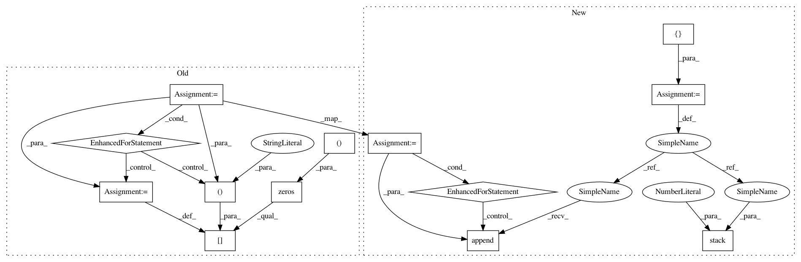

c3168479b5d352d45f2225c627154222b18af7bf,deepchem/models/multitask.py,SingletaskToMultitask,predict_on_batch,#SingletaskToMultitask#Any#,102
Before Change
n_tasks = len(self.tasks)
n_samples = X.shape[0]
y_pred = np.zeros((n_samples, n_tasks))
for ind, task in enumerate(self.tasks):
task_model = self.model_builder(self.task_model_dirs[task])
task_model.reload()
y_pred[:, ind] = task_model.predict_on_batch(X)
return y_pred
def predict(self, dataset, transformers=[]):
After Change
n_tasks = len(self.tasks)
n_samples = X.shape[0]
y_preds = []
for ind, task in enumerate(self.tasks):
task_model = self.model_builder(self.task_model_dirs[task])
task_model.reload()
y_preds.append(task_model.predict_on_batch(X))
y_pred = np.stack(y_preds, axis=1)
return y_pred
def predict(self, dataset, transformers=[]):
In pattern: SUPERPATTERN
Frequency: 3
Non-data size: 13
Instances
Project Name: deepchem/deepchem
Commit Name: c3168479b5d352d45f2225c627154222b18af7bf
Time: 2018-05-14
Author: peastman@stanford.edu
File Name: deepchem/models/multitask.py
Class Name: SingletaskToMultitask
Method Name: predict_on_batch
Project Name: geomstats/geomstats
Commit Name: bba95812af2e14a17bedb7ca35e6cfafc2d8796b
Time: 2020-11-19
Author: alice.le-brigant@enac.fr
File Name: geomstats/geometry/dirichlet_distributions.py
Class Name: DirichletMetric
Method Name: christoffels
Project Name: deepchem/deepchem
Commit Name: c3168479b5d352d45f2225c627154222b18af7bf
Time: 2018-05-14
Author: peastman@stanford.edu
File Name: deepchem/models/multitask.py
Class Name: SingletaskToMultitask
Method Name: predict